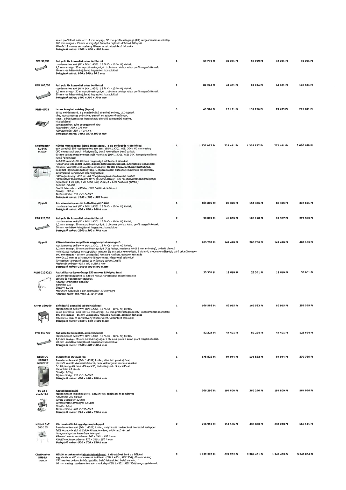

| Tétel | Menny. | Egys. | Anyag e.ár (net HUF) | Díj e.ár (net HUF) | Anyag összesen (net HUF) | Díj összesen (net HUF) | Anyag+Díj összesen (net HUF) |
|---|---|---|---|---|---|---|---|
| FPS 90/30 Fali polc fix konzollal, sima felülettel | 1 | NaN | 59 799 | 32 291 | 59 799 | 32 291 | 92 091 |
| FPS 160/30 Fali polc fix konzollal, sima felülettel | 1 | NaN | 82 224 | 44 401 | 82 224 | 44 401 | 126 624 |
| PRII-15CB Lapos konyhai mérleg (lapos) | 3 | NaN | 4 576 | 25 151 | 139 728 | 75 453 | 215 181 |
| ChefMaster KUB4A 5026629 Hűtött munkaasztal hátsó felhajtással, 1 db ajtóval és 4 db fiókkal | 1 | NaN | 1 337 927 | 722 481 | 1 337 927 | 722 481 | 2 060 408 |
| Egyedi Rozsdamentes asztal hulladékkivágító fölé | 1 | NaN | 154 306 | 83 325 | 154 306 | 83 325 | 237 631 |
| FPS 220/30 Fali polc fix konzollal, sima felülettel | 2 | NaN | 90 099 | 48 653 | 180 198 | 97 307 | 277 505 |
| Egyedi Kétmedencés-csepptálcás nagykonyhai mosogató | 1 | NaN | 263 756 | 142 428 | 263 756 | 142 428 | 406 185 |
| RUB00205212 Asztali karos keverőcsap 250 mm-es kifolyószárral | 1 | NaN | 23 351 | 12 610 | 23 351 | 12 610 | 35 961 |
| AHFM 160/60 Előkészítő asztal hátsó felhajtással | 1 | NaN | 166 583 | 89 955 | 166 583 | 89 955 | 256 538 |
| FPS 160/30 Fali polc fix konzollal, sima felülettel | 1 | NaN | 82 224 | 44 401 | 82 224 | 44 401 | 126 624 |
| STER UV NAPOLI 40903212 Sterilizátor UV sugaras | 1 | NaN | 175 822 | 94 944 | 175 822 | 94 944 | 270 766 |
| TC 22 E 21222413F Asztali húsdaráló | 1 | NaN | 366 296 | 197 800 | 366 296 | 197 800 | 564 096 |
| HAU-P 5x7 566 255 Kézmosó-kiöntő egység csapteleppel | 2 | NaN | 216 919 | 117 136 | 433 838 | 234 273 | 668 111 |
| ChefMaster KUB4A 5026629 Hűtött munkaasztal hátsó felhajtással, 1 db ajtóval és 4 db fiókkal | 2 | NaN | 1 152 225 | 622 202 | 2 304 451 | 1 244 403 | 3 548 854 |
